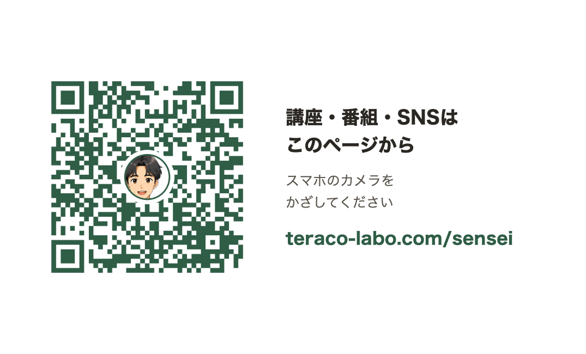
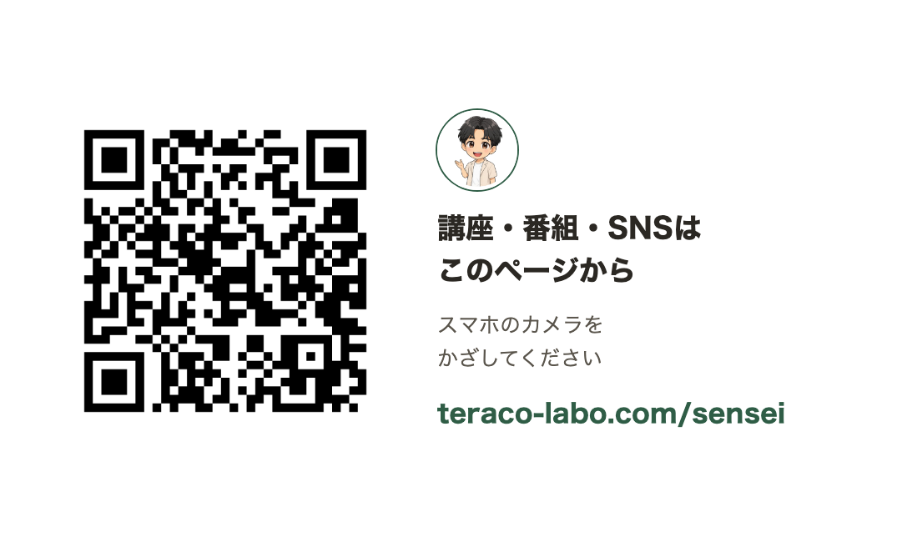
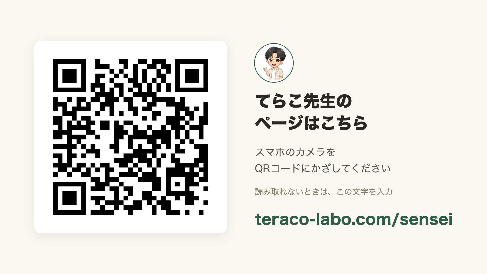
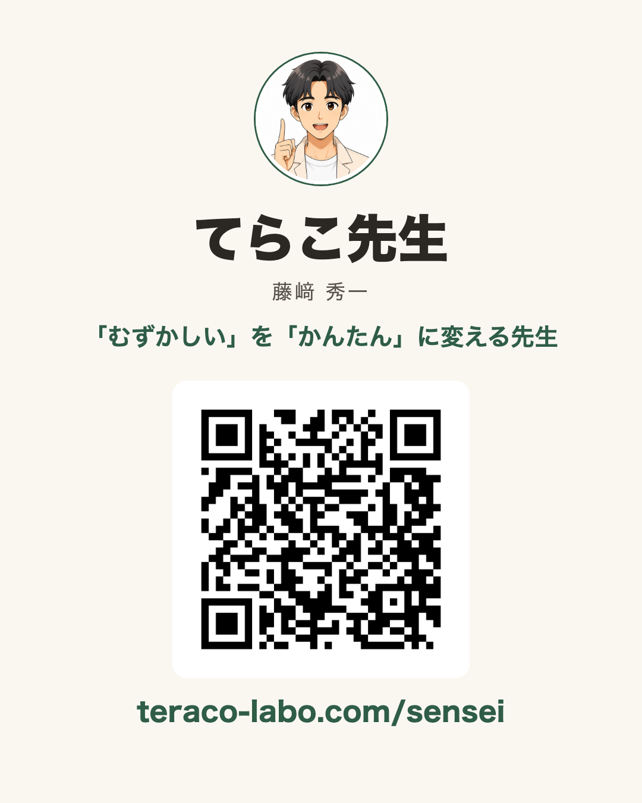
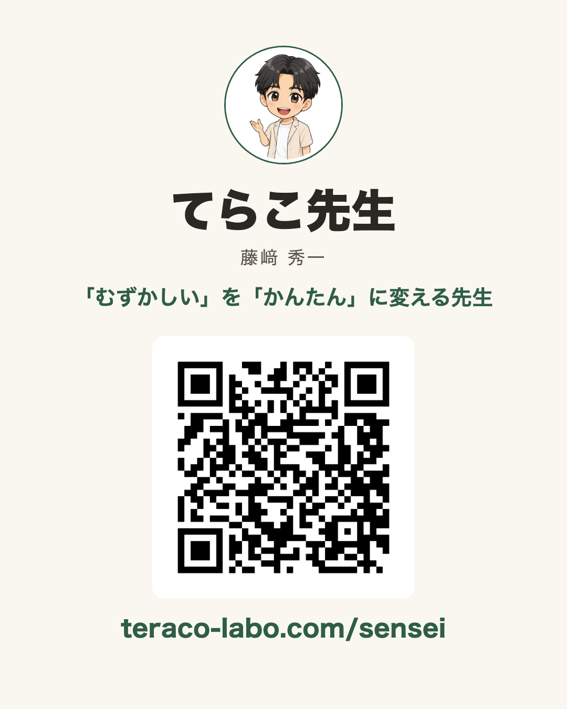
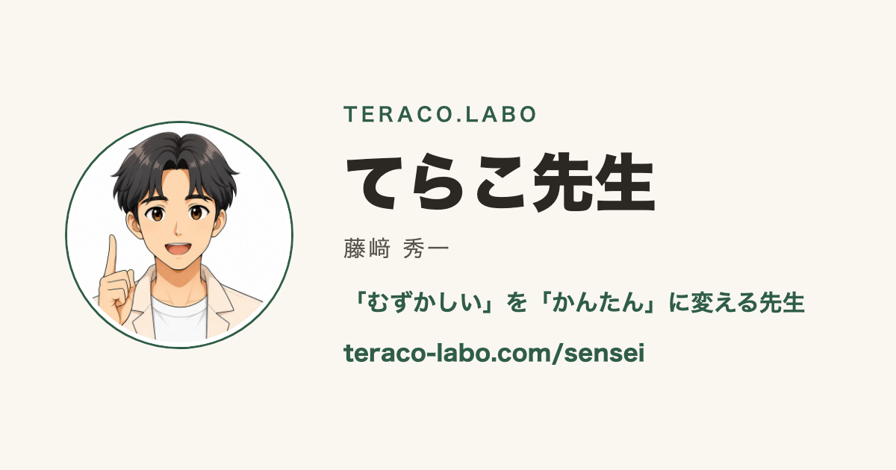
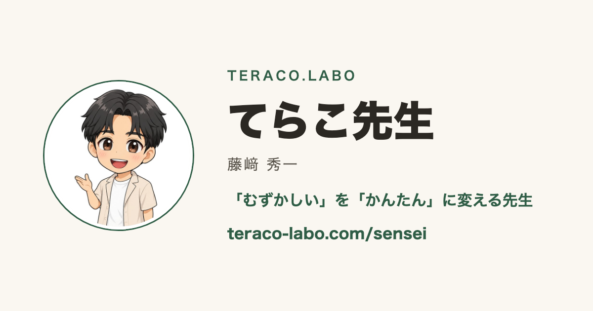

てらこ先生の名刺ページ一式
左がふつうの絵、右がちびキャラ。使い分け（2026-10-06 決定）：ページ・SNS・講座スライド・共有時の絵はちび、企業・自治体に渡す名刺と提案書はふつうの絵。URL は teraco-labo.com/sensei。QR は黒一色で中にアイコンなし。
0. アイコン


1. 名刺ページ（スマホで見たところ）
中は実際に押せます。いちばん下に「連絡先に保存する」。
ふつうの絵（参考）
ちびキャラ（採用）
2. 名刺の裏（91×55mm）… 企業・自治体向けは左（ふつうの絵）
名刺用の QR（来た人を「名刺から」として数える）。
ふつうの絵

ちびキャラ

3. 講座のスライド（16:9）… 右（ちび）
講座用の QR（「講座から」として数える）。読めない人向けに URL を大きく。
ふつうの絵
ちびキャラ

4. SNS に載せる画像（4:5）… 右（ちび）
SNS 用の QR（「SNSから」として数える）。
ふつうの絵

ちびキャラ

5. リンクを貼ったときに出る絵（LINE・X・Facebook など）… 右（ちび）
ふつうの絵

ちびキャラ

6. QR コード単体（黒・アイコンなし・両方共通）
印刷物やチラシに自由に置く用。どれも同じページに飛び、どこから来たかだけが違います。